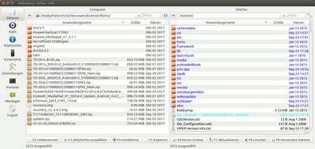
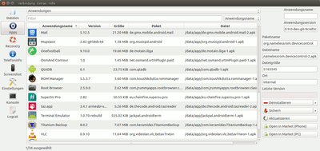
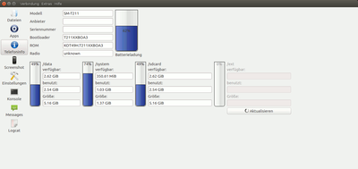

QtADB
Dieser Artikel wurde für die folgenden Ubuntu-Versionen getestet:
Ubuntu 16.04 Xenial Xerus
Ubuntu 14.04 Trusty Tahr
Zum Verständnis dieses Artikels sind folgende Seiten hilfreich:
QtADB  ist eine GUI, um Android-Geräte zu verwalten. Das unter Qt4 entwickelte Programm verwendet die Android-Programme adb und fastboot, bietet aber noch weitere Möglichkeiten, z.B. einen Browser für den Computer neben dem für das Android-Gerät zum Kopieren von Dateien, die Erstellung und Speicherung von Screenshots des Gerätebildschirms direkt auf den Computer, zeigt Informationen zur Speicherbelegung und der Batterie, und für einige Geräte besteht eine Möglichkeit, SMS zu über die GUI verschicken. QtADB ist in Versionen für Windows, OSx und Linux vorhanden. Leider wurde die Entwicklung 2014 eingestellt.
ist eine GUI, um Android-Geräte zu verwalten. Das unter Qt4 entwickelte Programm verwendet die Android-Programme adb und fastboot, bietet aber noch weitere Möglichkeiten, z.B. einen Browser für den Computer neben dem für das Android-Gerät zum Kopieren von Dateien, die Erstellung und Speicherung von Screenshots des Gerätebildschirms direkt auf den Computer, zeigt Informationen zur Speicherbelegung und der Batterie, und für einige Geräte besteht eine Möglichkeit, SMS zu über die GUI verschicken. QtADB ist in Versionen für Windows, OSx und Linux vorhanden. Leider wurde die Entwicklung 2014 eingestellt.
Der Entwickler gibt an, dass QtADB für folgende Geräte vollständig funktioniert: Motorola Droid, Motorola Milestone, Nexus One, HTC Dream, HTC Magic*, HTC Wildfire*, HTC Hero (CDMA), HTC Hero (GSM), HTC Desire, HTC HD2, HTC Desire HD, Sprint Evo 4G, Droid Eris, Samsung i5700, Samsung Galaxy S (GT-I9000), Nook Color, ZT-180 Tablet, Viewsonic G-Tablet, Samsung Intercept SPH-M910, Hannspree Hannspad, Samsung Galaxy Tab 10.1, Sony Ericsson Xperia X8
, der SMS-Manager aber nur mit den * versehenen Geräten. Die Recovery-Funktionen sind allerdings nur mit dem Amon-Ra Recovery  kompatibel, welches überhaupt nur für sehr wenige HTC-Geräte nutzbar war. Eine Weiterentwicklung für CWM-Recoverys ist leider nur noch als Windows-Programm greifbar.
kompatibel, welches überhaupt nur für sehr wenige HTC-Geräte nutzbar war. Eine Weiterentwicklung für CWM-Recoverys ist leider nur noch als Windows-Programm greifbar.
Installation¶
Das Programm benötigt folgende Pakete[1]
libqtgui4
libqt4-network
libqt4-declarative
aapt
 mit apturl
mit apturl
Paketliste zum Kopieren:
sudo apt-get install libqtgui4 libqt4-network libqt4-declarative aapt
sudo aptitude install libqtgui4 libqt4-network libqt4-declarative aapt
Außerdem muss adb und fastboot installiert sein. Es ist nicht nötig, das gesamte Android SDK zu installieren.
QtADB selbst ist nicht in den Paketquellen vorhanden; die letzte offizielle Version 0.8.1 kann aber als Archivdatei in 32- oder 64-bit-Version von der Projektseite heruntergeladen werden. Das Archiv wird entpackt[2], die darin befindliche Programmdatei QtADB kann direkt ausgeführt werden, für die systemweite Nutzung kann sie z.B. nach /usr/local/bin verschoben werden (Root-Rechte erforderlich[3]).
Hinweis!
Fremdsoftware kann das System gefährden.
Qt5-Version¶
Der Quellcode ist zwar auf bitbucket  vorhanden, allerdings scheint der Entwickler mitten im Umschreiben von qt4 auf qt5 das Projekt aufgegeben zu haben, eine Kompilierung ist weder unter qt4 noch qt5 möglich (siehe auch diesen Thread im Forum).
vorhanden, allerdings scheint der Entwickler mitten im Umschreiben von qt4 auf qt5 das Projekt aufgegeben zu haben, eine Kompilierung ist weder unter qt4 noch qt5 möglich (siehe auch diesen Thread im Forum).
Es existiert aber ein aktualisierter Fork auf github, aus dem sich QtADB unter Qt5 kompilieren[4] lässt.
Konfiguration¶
Zur Nutzung ist ein gerootetes Android-Gerät nötig; zudem sollte auf dem Gerät eine BusyBox installiert sein, um z.B. die Shellfunktion sinnvoll nutzen zu können.
Das Programm sollte gestartet[5] werden, bevor das Android-Gerät per USB-Kabel mit dem Computer verbunden wird, ansonsten erfolgt ggf. kein Start, beim Abziehen des USB-Kabels erscheint dann eine Warnmeldung. Beim ersten Start öffnet sich eine Abfrage, in welchem Verzeichnis sich die zu verwendenden adb- und aatp-Dateien befindet (normalerweise /usr/bin); zum entsprechenden Verzeichnis navigieren und die Auswahl bestätigen. In den Einstellungen des Programms kann dieser Pfad auch geändert werden, falls andere Versionen verwendet werden sollen.
Im Panel erscheint (wenn in der Ubuntu-Version möglich) ein Android-Applet, über einem  -Klick kann im Dropdown-Menü das "Logcat" geöffnet werden oder das Programm beendet werden.
-Klick kann im Dropdown-Menü das "Logcat" geöffnet werden oder das Programm beendet werden.
.desktop-Datei¶
Falls QtADB von einem Startmenü aus aufgerufen werden soll, kann eine .desktop-Datei in einem Editor[2] angelegt werden. Die Datei wird als qtadb.desktop nach /usr/share/applications verschoben. Eine Logo kann von Nicolas Bernaert Github-Seite bezogen werden, die Datei qtadb.png mit Root-Rechten nach /usr/share/icons/ verschieben.
[Desktop Entry] Encoding=UTF-8 Name=QtADB Exec=qtadb Icon=qtadb Type=Application Categories=Utility;

Bedienung¶
Nach Anstecken der USB-Verbindung muss zunächst die Verbindung zum Telefon hergestellt werden; dazu - ggf. mehrmals - die "Aktualisieren"-Schaltfläche -klicken. Dann werden auf der linken Seite weitere Funktions-Schaltflächen sichtbar.
Einstellungen¶
Unter "Einstellungen" lassen sich diverse Dinge zum Erscheinungsbild verändern ("Allgemein") und Pfade und anzuzeigende Spalten für die "Dateimanager" festlegen. Standards z.B. für die Sicherungsfunktion lassen sich unter "Anwendungsmanager" festlegen. Dort kann auch der Pfad angegeben werden, unter dem die externe SD-Karte zu finden ist. Die Suche ("Detect") funktioniert nicht immer zuverlässig, wenn eine falsche Angabe erscheint, muss der Pfad händisch eingegeben werden. In "Animation" kann der Effekt zum Wechseln zwischen den Fenstern eingestellt werden, unter "Shell" die Farbgebung für die Konsole.
Die Sprache der Oberfläche kann über den Reiter "Hilfe" eingestellt werden, die Suche nach Updates funktioniert nicht, es gibt aber auch keine.
Dateimanager¶
Beim Anschluss eines Gerätes öffnet sich zunächst das Dateimanager-Fenster ("Dateien"), mit einen "Computer"-Browser links und einem "Telefon"-Browser rechts. Unterhalb der Fenster befinden sich die möglichen Aktionen, die auch mit den Tasten
F1 bis
F9 aufgerufen werden können. Dazu die jeweils gewünschte(n) Datei(en) über -Klick auswählen. So kann z.B. ganz einfach zwischen den Geräten hin- und herkopiert werden (jeweils von/in das geöffnete Verzeichnis), Apps lassen sich direkt vom Rechner installieren, nicht mehr benötigte Dateien können direkt gelöscht werden.

App-Manager¶
Im App-Manager-Fenster (Schaltfläche "Apps") lassen sich die System-Apps, ggf. erstelle Sicherungen und die Benutzer-Apps anzeigen (Dropdown-Menü ganz oben). Rechts werden verschiedene Informationen angezeigt; besonders interessant sind die Schaltflächen zum "Deinstallieren" (nach einer Rückfrage) und "Sichern"; im Dropdown-Menü, über die Pfeiltaste rechts kann ausgewählt werden, ob nur die App, nur die Daten der App oder beides gesichert werden soll.
Die Sicherungen werden auf dem Gerät selbst intern im Ordner /mnt/shell/emulated/0/QtADB/backup/ aka /sdcard/QtADB/Backup abgelegt, nicht direkt auf dem angeschlossenen Computer. Um sie "extern" zu sichern, müssen die Dateien markiert und auf den Rechner kopiert werden, allerdings kann nicht der ganze Ordner direkt kopiert werden, QtADB stürzt dann ab.
Wiederherstellen lassen sich die Sicherungen im Modus "Sicherungen", nach -Klick auf eine dort aufgeführte App kann ausgewählt werden, ob die App, die Daten oder beides wiederhergestellt werden sollen.
Theoretisch ließen sich die .apk-Dateien auch mit einen -Klick auf die App im sich öffnenden Kontextmenü-Eintrag direkt auf dem Computer speichern; leider funktioniert das nicht, es wird bestenfalls eine Datei _.apk im ausgewählten Verzeichnis abgelegt; der Fortschrittsbalken im Dialog-Fenster bewegt sich aber nicht, ggf. stürzt QtADB auch dabei ab.
Die beiden Schaltflächen "Open in Market" waren dazu bestimmt, die Apps in einem Browser in Google Play auf dem Computer oder die Google-Play-App auf dem Gerät anzeigen zulassen; die dazu hinterlegten Links sind allerdings obsolet.

Weitere Funktionen¶
Unter "Telefoninfo" kann man Angaben zum Telefon, dem Batteriestatus und der Speicherbelegung einsehen; je nach Gerät sind nicht alle Informationen greifbar, dann ggf. Berechtigungen anpassen, und in den Einstellungen den Pfad zur externen SD-Karte korrekt angeben. Unter "Screenshot" lässt sich der gesamte Telefonbildschirm aufnehmen und das Bild auf dem Computer speichern. Das funktioniert allerdings nur im normalen Modus, nicht unter Recovery- oder fastboot-Modus, der Versuch führt zum Absturz des Programms.
Unter "Messages" können theoretisch SMS-Nachrichten auf dem Gerät eingesehen, und vom Computer über das Telefon verschickt werden. Um Zugriff auf die SMS-Funktion zu bekommen, muss außerdem das QtADB.apk-Paket / auf dem Android-Gerät installiert und der Service dann auf dem Android-Gerät laufen. Außerdem ist eine WiFi-Verbindung über das selbe Netzwerk nötig. Leider funktioniert das nur bei sehr wenigen Geräten tatsächlich gut.
Unter "Konsole" öffnet sich eine interaktive Shell, die sowohl im Normalen als auch im Recovery-Modus nutzbar ist; "Logcat" öffnet ein zusätzliche Fenster, in dem das komplette Log der Anwendung in "Echtzeit" eingesehen werden kann.
Die Schaltflächen zu "Recovery" und "Fastboot" werden nur in den jeweiligen Modi angezeigt; dabei sind die im Recovery-Fenster aufgeführten Funktionen zu Backups, Flashen etc. leider derzeit ohne eine Amon-Ra-Recovery so gut wie gar nicht nicht nutzbar.
Fastboot¶
Achtung!
Bei der Verwendung ist größte Umsicht vonnöten, Fehlbedienungen können zu schweren Schäden führen! Nur verwenden, wenn man wirklich weiß, was man tut!
Im "Fastboot"-Modus (Schaltfläche nur nach Neustart in den Bootloader sichtbar) stehen nur vier Reiter zur Verfügung, mit denen Partitionen geflasht werden können:
"SPL flashen" (Second Programm Loader, siehe dazu im xda-WiKi
oder auf android-profis.de wird nur sehr selten gebraucht!"Recovery flashen" - eine neue Recovery-Image-Datei aufspielen.
"Radio flashen" - eine radio.img-Datei flashen (zuständig für Funktion von Bluetooth, GPS, Nutzung des Mobilfunknetzes und WLAN).
"Image booten" - ein komplettes Boot-Image flashen und starten.
Bei Aufruf der Funktionen wird ein Browser geöffnet, mit dem die zu flashenden Image-Dateien gewählt werden, bei Bestätigung wird das Image aufgespielt.
Modi wechseln¶
Im Reiter "Extras" kann, je nach Modus, über "ADB" oder "Fastboot" auf verschiedenen Möglichkeiten eines Reboot zugegriffen werden. Aus "ADB" kann z.B. das Gerät in den fastboot-Modus ("In den bootloader booten") gebootet (siehe auch fastboot), "In das Recovery-Menü" gebootet, normal neugestartet oder ganz abgeschaltet werden. Samsung-Geräte lassen sich allerdings nicht in den Download- oder auch "Odin"-Modus versetzen (siehe Heimdall); ein Gerät in diesem Modus lässt sich auch nicht mit QtADB verbinden.
Im fastboot-Modus ist im Reiter "Extras" "fastboot" auswählbar; das Android-Gerät kann erneut in den Bootloader gebootet, normal gestartet oder ganz abgeschaltet werden.
Kabellose Verbindung¶
Im Reiter "Verbindung" kann "W-Lan" gewählt werden, um kabellos auf das Android-Gerät zugreifen zu können. Dazu muss auf dem Gerät eine entsprechende App (z.B. "ADBwireless") installiert sein und laufen. Ein angeschlossenen USB-Kabel trennen. In QtADB öffnet sich eine Einstellungsfenster, in welchem die IP-Adresse des Gerätes eingegeben werden muss. Standardmäßig wird die Verbindung über über Port 5555 erstellt. Alle Funktionen im Normal-Modus können auch über die WiFi-Verbindung erfolgen, allerdings ist die USB-Verbindung wesentlich schneller. Die WiFi-Funktion kann allerdings in aller Regel nicht im fastboot-Modus eingesetzt werden, die WiFi-Verbindung bricht mit dem Reboot des Gerätes ab.
Probleme und Lösungen¶
Screenshots¶
Screenshots können nur im "normalen" Modus erstellt werden, in anderen Modi stürzt das Programm beim Erstellen ab. Im Terminal erscheint eine Meldung
Gleitkomma-Ausnahme (Speicherabzug geschrieben)
Apps werden nicht angezeigt¶
Wenn sich die Benutzer-Apps sich nicht anzeigen lassen, müssen ggf. die Rechte für das Verzeichnis /data/app angepasst werden:
su chmod 755 /data/app
Das Vorgehen kann auch helfen, wenn im Dateimanager bestimmte Pfade auf dem Gerät nicht angezeigt werden können.
Links¶
QtADB
ProjektseiteAusführliche Besprechung
auf technorms.comDetaillierte Anleitung
auf dyndns-org, u.a. mit .desktop-Datei Offizieller xda-Thread
des EntwicklersInstallation von QtADB
auf YouTube
- Erstellt mit Inyoka
-
 2004 – 2017 ubuntuusers.de • Einige Rechte vorbehalten
2004 – 2017 ubuntuusers.de • Einige Rechte vorbehalten
Lizenz • Kontakt • Datenschutz • Impressum • Serverstatus -
Serverhousing gespendet von